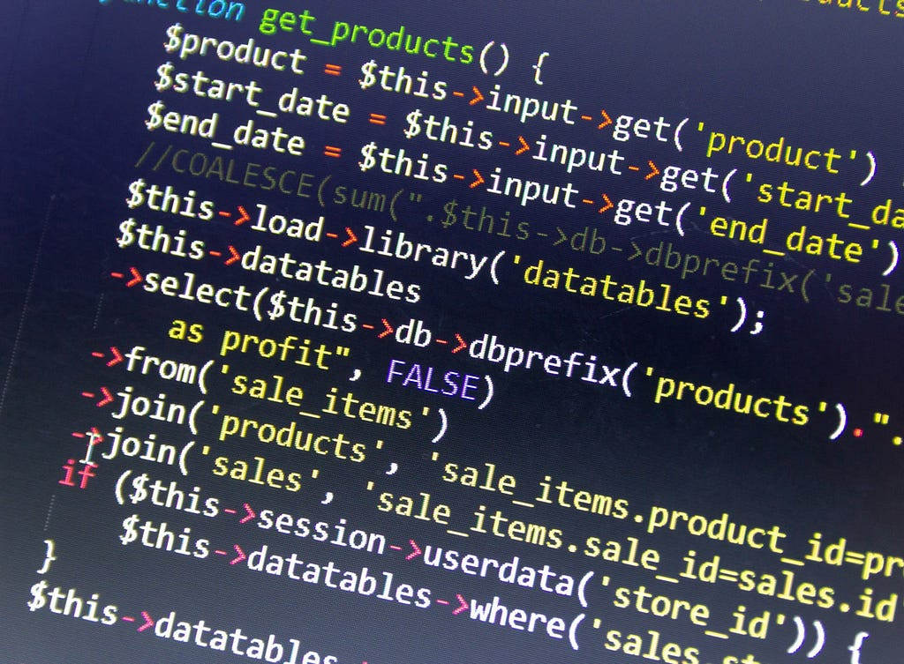
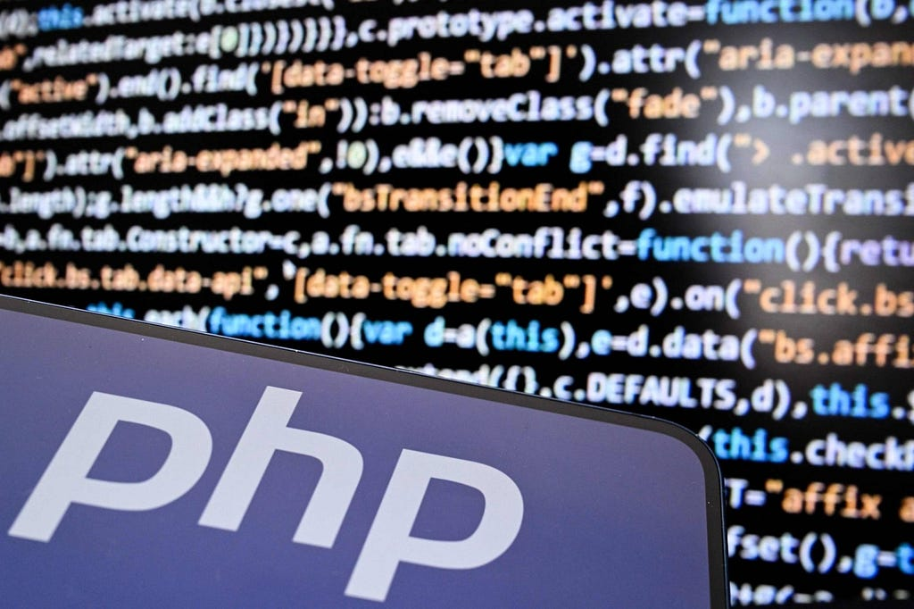
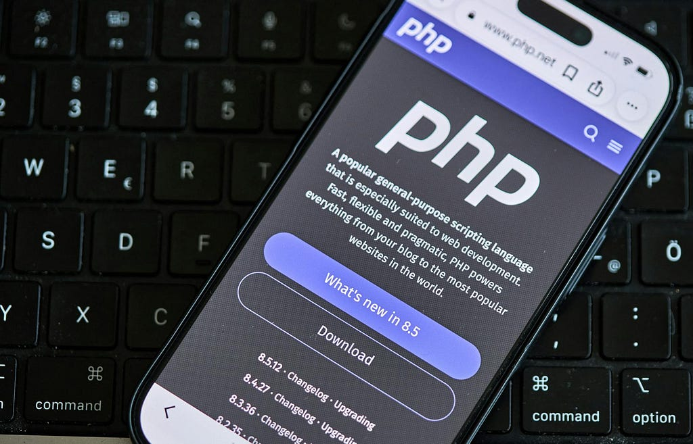
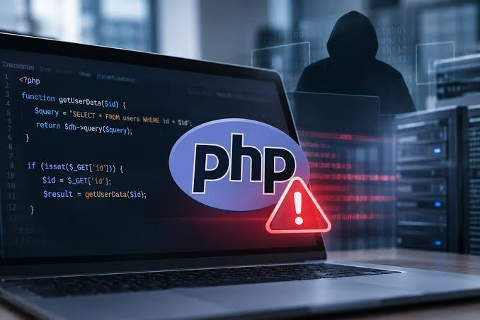
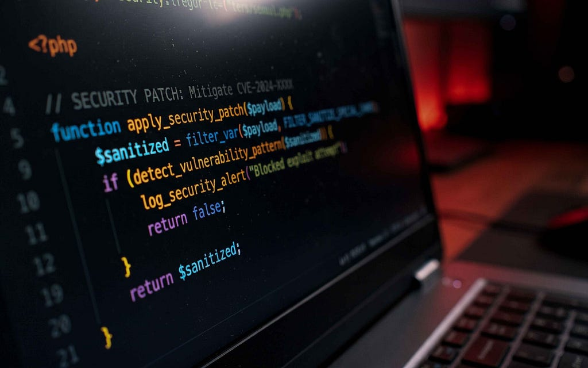
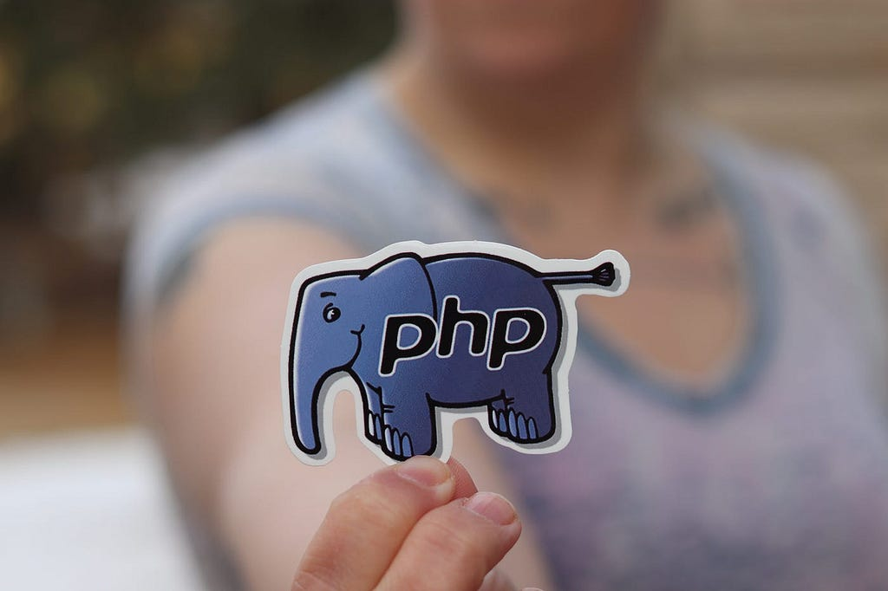

Luís Antônio Costa
Luís Antônio Costa
Durante muito tempo, falar em desenvolvimento web era praticamente sinônimo de falar em PHP. A linguagem esteve presente na construção de milhões de sites, sistemas corporativos, fóruns e plataformas que ajudaram a transformar a Internet no que conhecemos hoje. Entretanto, mesmo depois de três décadas de existência, o PHP continua sendo uma tecnologia que desperta opiniões bastante diferentes entre os desenvolvedores. Enquanto alguns defendem sua simplicidade e acessibilidade, outros criticam suas inconsistências e o histórico de problemas de segurança.
E, recentemente, essa discussão voltou a ganhar força. Em outubro deste ano, foram descobertas vulnerabilidades críticas que colocaram em alerta administradores de servidores, empresas de hospedagem e desenvolvedores que utilizam a linguagem. Mas, antes de entender o que aconteceu, vale conhecer um pouco da história do PHP e como ele chegou até aqui.
De ferramenta pessoal a uma das linguagens mais populares da Web
O PHP surgiu em 1994, quando o programador Rasmus Lerdorf desenvolveu um conjunto de ferramentas para acompanhar as visitas ao seu currículo online. Inicialmente chamado de Personal Home Page Tools, o projeto tinha uma proposta bastante simples: facilitar a criação de páginas que pudessem apresentar informações dinâmicas, algo que ainda não era tão comum na Internet daquela época.
Em 1995, o código foi disponibilizado publicamente e começou a receber contribuições de outros desenvolvedores. Com o passar dos anos, aquilo que nasceu como uma ferramenta pessoal acabou se transformando em uma linguagem de programação propriamente dita. O nome PHP também mudou de significado, passando a representar o acrônimo recursivo PHP: Hypertext Preprocessor.

O grande diferencial era sua facilidade de integração com HTML e bancos de dados. Em vez de construir toda uma infraestrutura para produzir páginas dinâmicas, os desenvolvedores podiam inserir instruções PHP diretamente no código das páginas, deixando que o servidor processasse as informações antes de enviá-las ao navegador.
Essa simplicidade ajudou a popularizar a linguagem, especialmente durante os anos 2000, quando plataformas como WordPress, Joomla e Drupal passaram a utilizá-la. O PHP também se tornou bastante comum em sistemas de comércio eletrônico, aplicações empresariais e projetos acadêmicos.
Naturalmente, a linguagem não permaneceu parada no tempo. O PHP 5 aprimorou seu suporte à orientação a objetos, enquanto o PHP 7, lançado em 2015, trouxe melhorias expressivas de desempenho e consumo de memória. Já o PHP 8, disponibilizado em 2020, introduziu recursos como argumentos nomeados, tipos de união, atributos e compilação JIT (Just-in-Time).
Em outras palavras, aquele PHP conhecido por misturar código de programação com HTML evoluiu para uma tecnologia consideravelmente mais completa, capaz de sustentar aplicações modernas e arquiteturas de software complexas.
Mas por que o PHP recebe tantas críticas?

Uma das maiores vantagens do PHP sempre foi sua baixa barreira de entrada. É relativamente fácil começar a desenvolver, encontrar documentação, contratar hospedagem e colocar uma aplicação em funcionamento. Além disso, frameworks como Laravel e Symfony oferecem estruturas que facilitam a organização do código, o desenvolvimento de APIs, o acesso a bancos de dados e a implementação de mecanismos de autenticação.
Por outro lado, essa facilidade também ajudou a criar alguns problemas. Durante muitos anos, aplicações PHP foram desenvolvidas sem padrões consistentes de arquitetura, com código HTML, regras de negócio e consultas SQL misturados em um mesmo arquivo. A linguagem também acumulou inconsistências históricas em funções e comportamentos, embora muitas delas tenham sido corrigidas nas versões modernas.
Outro ponto importante é que a popularidade do PHP acaba ampliando sua superfície de exposição. Afinal, uma vulnerabilidade descoberta em uma tecnologia utilizada por tantos sites pode atingir desde pequenos blogs até grandes sistemas corporativos.
Isso não significa que o PHP seja necessariamente menos seguro do que Java, Python ou JavaScript. Aplicações desenvolvidas em qualquer uma dessas linguagens podem apresentar falhas graves, especialmente quando não seguem boas práticas de desenvolvimento. Entretanto, existe uma diferença importante entre uma vulnerabilidade provocada pelo programador e outra localizada no próprio mecanismo de execução da linguagem.
E é justamente esse segundo cenário que tornou os acontecimentos de outubro de 2026 tão preocupantes.
O que aconteceu com a segurança do PHP?

No dia 21 de outubro de 2026, a equipe responsável pelo PHP publicou atualizações emergenciais para corrigir duas vulnerabilidades críticas, identificadas como CVE-2026–109618 e CVE-2026–109619. Ambas receberam pontuação 9,2 de severidade no sistema CVSS 4.0 e ficaram conhecidas, em alguns alertas de segurança, como PHP2Shell.
O problema é que essas falhas podem permitir a chamada Remote Code Execution (RCE), ou execução remota de código. Na prática, isso significa que um invasor pode conseguir executar instruções maliciosas em um servidor vulnerável, mesmo sem possuir usuário ou senha de acesso.
A primeira vulnerabilidade, CVE-2026–109618, está relacionada ao gerenciamento de memória. Quando uma requisição ultrapassa determinados limites, o PHP pode interromper seu processamento enquanto algumas estruturas internas ainda estão incompletas. Em determinadas condições, isso pode provocar corrupção de memória e abrir caminho para a execução de código malicioso.
Já a segunda, CVE-2026–109619, envolve o reaproveitamento incorreto de estados internos entre requisições. Basicamente, informações associadas a uma requisição podem continuar acessíveis depois que a memória correspondente deveria ter sido liberada, permitindo comportamentos inesperados e potencialmente exploráveis.
O detalhe mais grave é que os problemas não estão limitados a um framework ou aplicação específica. Eles afetam o núcleo do PHP e podem atingir diferentes ambientes de execução, incluindo servidores Apache com modphp, PHP-FPM, php-cgi e outras implementações. Segundo a própria equipe do PHP, configurações com modphp apresentam risco especialmente elevado, com demonstrações de exploração antes mesmo da execução do código da aplicação.

Para entender a gravidade, imagine uma loja virtual que utiliza PHP para processar cadastros, pagamentos e consultas a produtos. Mesmo que seus desenvolvedores tenham implementado corretamente autenticação, validação de entradas e consultas parametrizadas, uma vulnerabilidade no interpretador poderia permitir que um atacante comprometesse o servidor por meio de requisições especialmente preparadas.
Dependendo das permissões e das proteções do ambiente, isso poderia resultar em acesso indevido a arquivos, exposição de informações sensíveis, instalação de códigos maliciosos ou interrupção do serviço. Evidentemente, esses são impactos possíveis, e não uma afirmação de que todos os servidores vulneráveis tenham sido invadidos.
E o episódio também não foi exatamente um caso isolado. Em 2024, a vulnerabilidade CVE-2024–4577 já havia exposto instalações de PHP executadas com Apache e PHP-CGI no Windows. Na ocasião, um problema relacionado à interpretação de caracteres na linha de comando permitia que atacantes injetassem parâmetros e, em determinadas condições, executassem código remotamente. A falha chegou a ser explorada ativamente, demonstrando que problemas na integração entre a linguagem e o ambiente de execução podem ter consequências bastante sérias.
E como está a situação atualmente?

A boa notícia é que as duas vulnerabilidades principais de outubro já receberam correções oficiais. No dia 21, foram disponibilizadas as versões PHP 8.2.35, 8.3.36, 8.4.27 e 8.5.12, que corrigem os problemas identificados.
Entretanto, a situação ainda exige atenção. Em 23 de outubro, o projeto divulgou outra vulnerabilidade potencial de execução remota de código, identificada como CVE-2026–115560. Nesse caso, o risco está associado a uma combinação bastante incomum de configurações de sessão e código da aplicação. A equipe recomendou medidas temporárias de mitigação, com uma correção prevista para o ciclo regular de atualizações.
Poucos dias depois, em 26 de outubro, também foram disponibilizadas novas compilações do PHP para Windows, identificadas pelo sufixo -1, corrigindo uma vulnerabilidade na biblioteca de descompressão Brotli utilizada por determinadas configurações da extensão cURL.
Isso mostra que a resposta da comunidade está acontecendo, mas também reforça a importância da manutenção constante. Não basta atualizar o código de um sistema e esquecer os componentes responsáveis por executá-lo.
Para quem administra aplicações PHP, a recomendação principal é verificar a versão instalada e aplicar as correções disponíveis. Sistemas que ainda utilizam versões antigas, especialmente aquelas sem suporte oficial, merecem atenção redobrada. Também é importante acompanhar as atualizações dos frameworks, bibliotecas e servidores utilizados, além de monitorar logs e comportamentos suspeitos.
Vale lembrar que algumas medidas de configuração podem reduzir temporariamente o risco de exploração, mas não substituem as atualizações de segurança.
O PHP continua sendo uma boa escolha?

Apesar de todos esses acontecimentos, seria exagerado afirmar que o PHP chegou ao fim ou que deixou de ser uma opção viável para novos projetos. A linguagem continua contando com um ecossistema bastante consolidado, ferramentas modernas e uma comunidade que mantém seu desenvolvimento ativo.
O que essas vulnerabilidades demonstram é que nenhuma tecnologia está imune a problemas de segurança, independentemente de sua maturidade ou popularidade. Aliás, quanto maior a utilização de uma linguagem, maior também pode ser o impacto de uma falha descoberta em seu núcleo.
O PHP percorreu um caminho bastante curioso: começou como uma ferramenta para gerenciar uma página pessoal, tornou-se um dos principais responsáveis pela popularização da Web dinâmica e, mais de 30 anos depois, continua sendo utilizado em aplicações de diferentes portes.
Talvez a principal lição desse episódio seja justamente a necessidade de abandonar a ideia de que um sistema está seguro apenas porque funciona corretamente. Segurança não é uma característica que se implementa uma única vez, mas um processo contínuo de atualização, revisão e monitoramento.
E, considerando a quantidade de aplicações que ainda dependem do PHP, é bastante provável que continuaremos ouvindo falar da linguagem por muitos anos. Seja pelas suas qualidades, pelas suas limitações ou, infelizmente, por novos problemas de segurança.